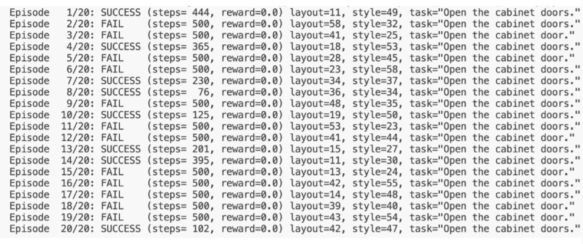
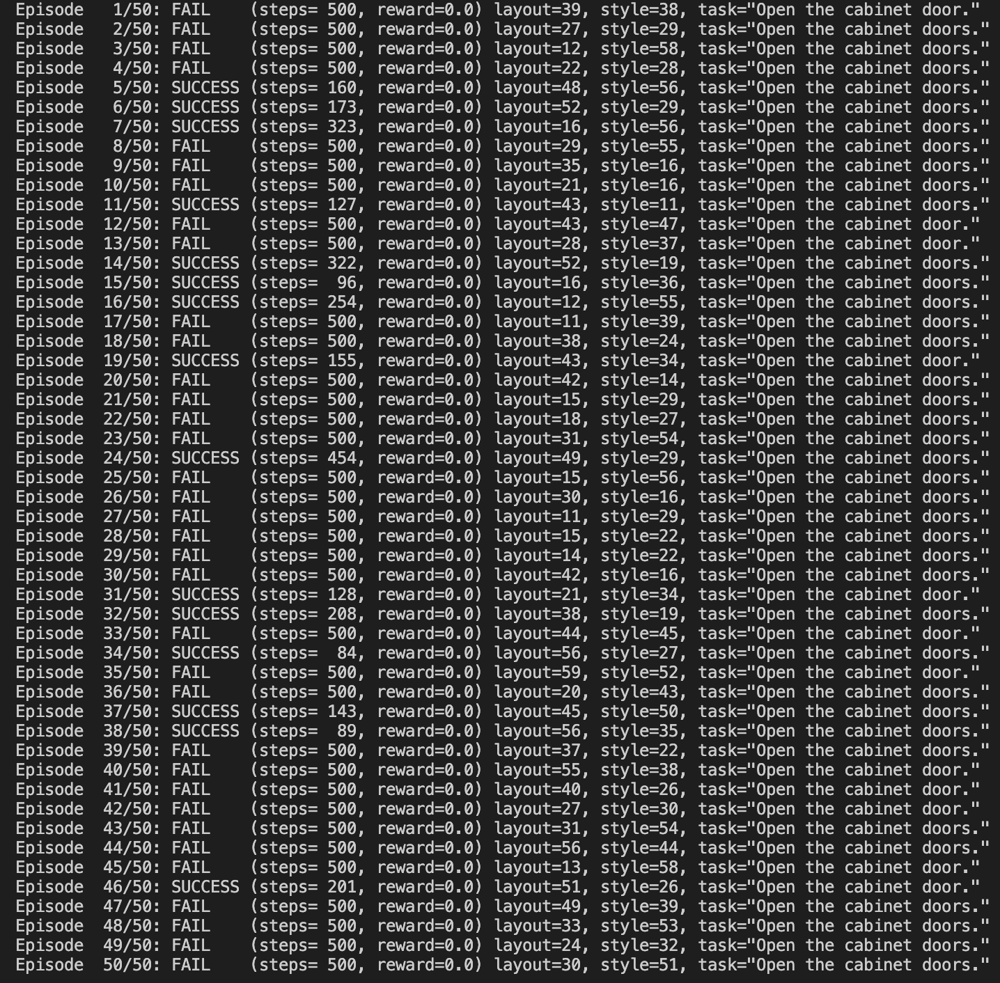
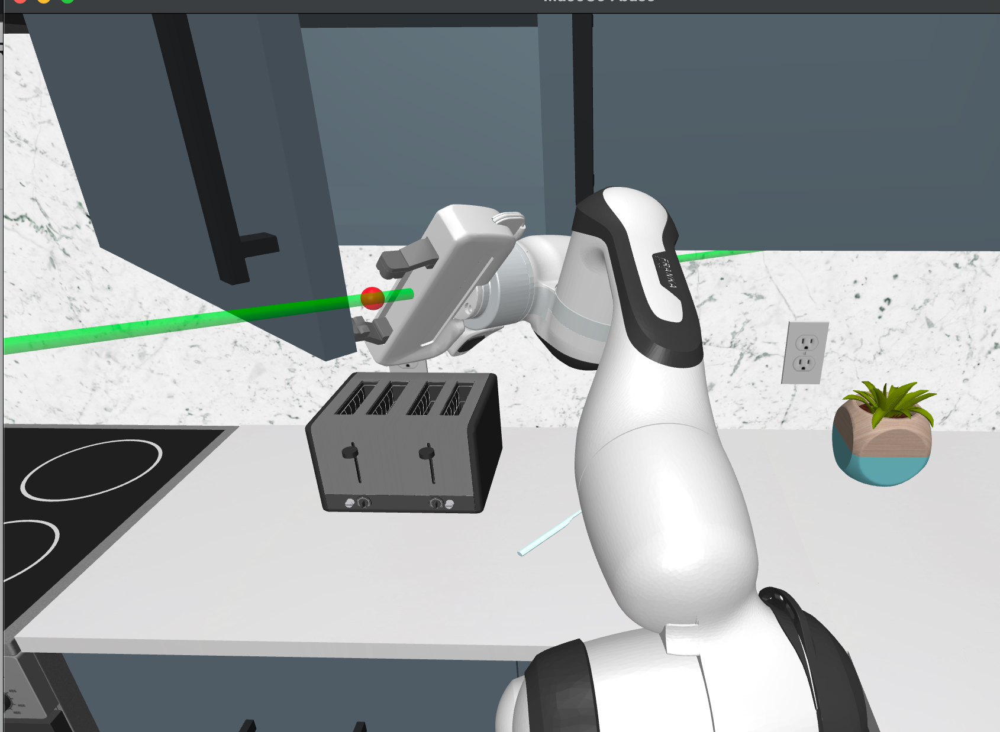
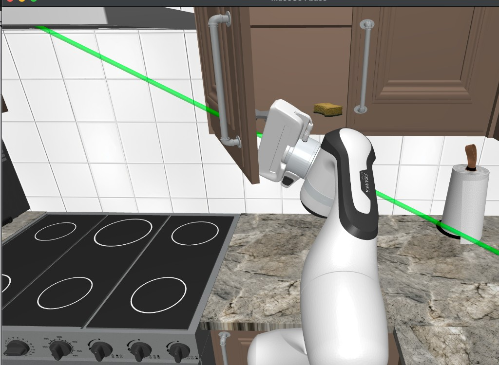
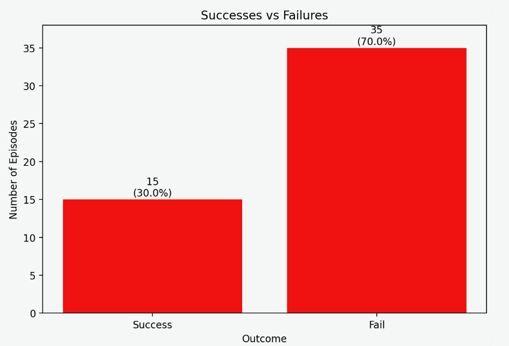
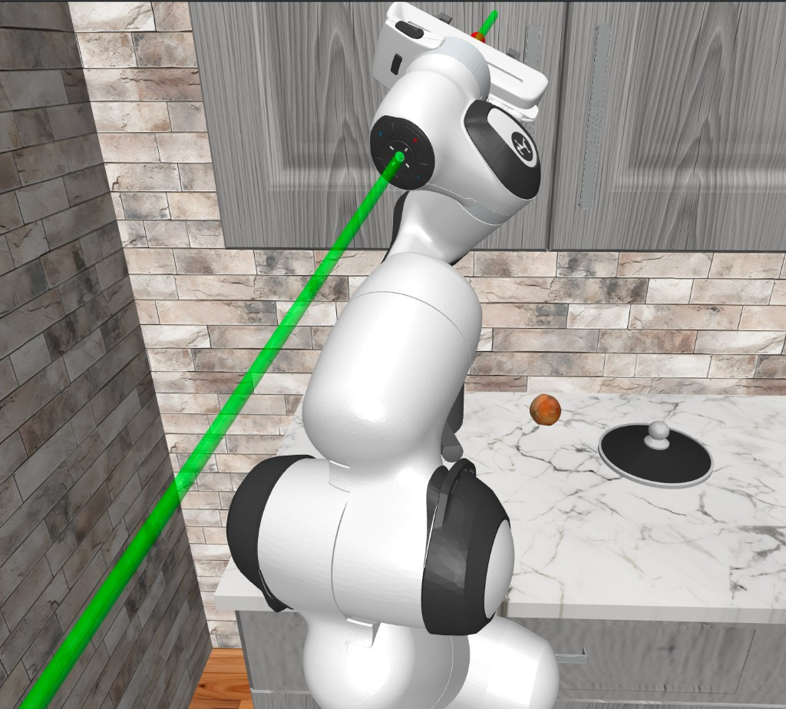
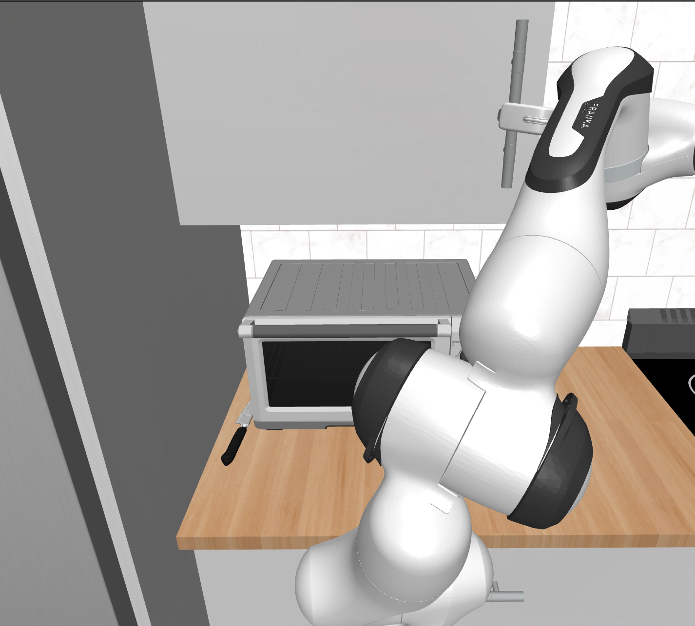

COM SCI 188 (Winter 2026) · Final Project
OpenCabinet Imitation Learning
Default Project (COM SCI 188): Temporal Behavior Cloning with a 1D Conditional U-Net backbone (06c), focused on action chunking, overfitting, checkpoint selection, and reproducibility under limited demonstrations.
Team 23: Anshul Aravind · Jeffrey Liu
Problem Statement
We selected the CS 188 default project: learning an imitation policy for the RoboCasa OpenCabinet task, where a robot opens cabinet doors across varied kitchen layouts, handle types, and start poses. From 107 demonstrations, we converted trajectories into state-action pairs and trained a policy to reproduce robust cabinet-opening behavior in rollout.

Method Overview
Our final policy is a multi-step behavior cloning model with a 1D Conditional U-Net sequence backbone. At each decision point, the model conditions on recent state history and predicts a chunk of future actions in one forward pass, which improves smoothness relative to single-step action prediction.
We optimize a combined objective: (1) MSE action loss, (2) L1 reconstruction loss, and (3) velocity consistency on temporal differences. During execution, predicted action chunks are denormalized and only the next few actions are executed before replanning in a feedback loop.
We first attempted diffusion policy, but iteration was too slow and unstable for our compute/runtime constraints and dataset size, so we moved to Temporal BC for faster and more reproducible progress.
Architecture
Fig 2a shows the behavior cloning pipeline from observation conditioning to chunked action prediction. Fig 2b shows the 1D U-Net backbone with down/mid/up paths and conditional residual blocks used for temporal sequence regression.

Training Setup / Hyperparameters
Training used 107 demonstrations with provided RoboCasa metadata augmentation (e.g., handle position, end-effector distance, and hinge angle features). We trained for 400 epochs and selected checkpoints by rollout quality rather than train loss alone.
| Parameter | Value | Notes |
|---|---|---|
| Backbone | 1D Conditional U-Net (06c) | Temporal BC setting |
| Training Epochs | 400 | Best checkpoint selected from periodic eval |
| Chunk Length | 16 predicted actions | Action chunk size |
| Observation History Steps | 2 | Context window for conditioning |
| Executed Actions per Plan | 2 | n_action_steps = 2 |
| Conditioning Dimension | 256 | Observation/time conditioning |
| Time Embedding Dimension | 128 | Temporal encoding |
| Base Channels | 64 | U-Net width |
| Trainable Parameters | ~1.14M | Approximate model size |

Evaluation Results
We prioritize rollout success metrics over loss-only comparisons. Our project criterion for a "good" result is a success rate of at least 30%.
In the main 50-trial evaluation run, Temporal BC achieved 15 successes and 35 failures (30.0%), meeting this threshold, while the diffusion baseline remained below it.
| Model | Split | Episodes | Successes | Success Rate | Avg Episode Length |
|---|---|---|---|---|---|
| Temporal BC (06c) | 50-trial eval | 50 | 15 | 30.0% | ~500 (many timeout failures) |
| Diffusion Policy (baseline) | Pilot runs | 50 | 9 | 18.0% | 468 |
| Temporal BC (06c) | Additional checkpoints | 20 | 8 | 40.0% | 396.9 |





Failure Analysis / Lessons Learned
Diffusion policy was our first approach but proved too slow and costly to iterate on, and training improvements did not reliably translate to better rollouts. Switching to Temporal BC with a 1D U-Net gave faster iteration and more stable optimization for low-dimensional state-action modeling.
Even with Temporal BC, overfitting appeared early on the 107-demo dataset: train loss could keep improving while validation/rollout performance plateaued. We learned to use stronger checkpoint discipline, smaller or more regularized models, and rollout success as the primary model-selection signal.
Engineering issues also affected outcomes (Colab resets, temporary checkpoint loss, incomplete asset downloads), reinforcing the need for reproducible commands, persistent storage, and deterministic eval.


Demo Video
Demonstration rollout from our final policy.
Reproducibility
We use fixed seeds, explicit checkpoint directories, and consistent evaluation splits across runs.
Run Commands
# Train
python train.py \
--config configs/temporal_bc_06c.yaml \
--seed 0 \
--exp-name temporal_bc_06c_final
# Evaluate
python eval.py \
--checkpoint checkpoints/temporal_bc_06c_final/best.pt \
--episodes 50 \
--seed 0Team Contributions
Anshul Aravind: Colab environment setup, dataset/asset pipeline, core training runs, rollout
video generation, runtime/dependency debugging, and report writing/editing.
Jeffrey Liu: Model/config tuning, experiment comparison, cross-split evaluation analysis,
methodology refinement, failure analysis, and report writing/editing.
Final decisions and reported conclusions were made collaboratively after joint review of results.
Credits / Attribution
We thank the COM SCI 188 course staff for project support and the RoboCasa/OpenCabinet benchmark and tooling used in this work. This site summarizes Team 23 final methodology, results, and reflections.
Attribution: We built on course-provided resources and used AI tools for drafting/debugging support, while Team 23 implemented the data pipeline, Temporal BC + 1D U-Net training/evaluation workflow, experiment analysis, and final report/website content.